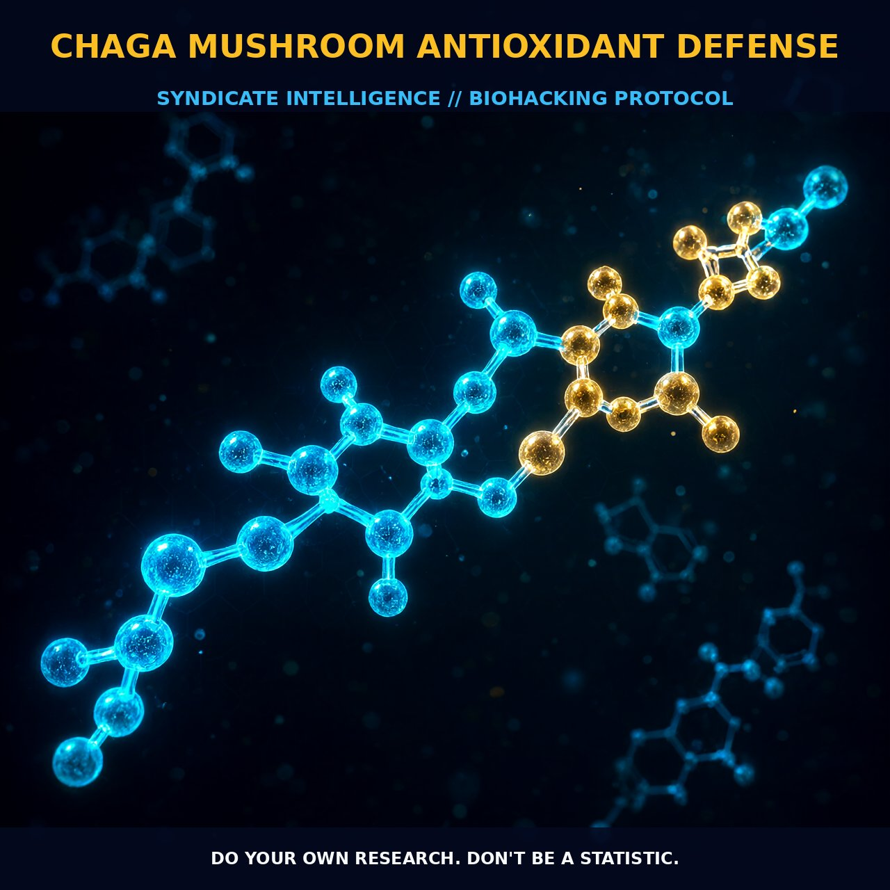

Chaga Mushroom: A Robust Antioxidant Defense

The Mechanism
Chaga mushroom (Inonotus obliquus) is renowned for its rich source of bioactive compounds with potent antioxidant properties. The primary antioxidants found in chaga are phenolic acids such as vanillic and caffeic acids, which exhibit strong antioxidant activity by neutralizing reactive oxygen species (ROS) and stabilizing endogenous antioxidant enzymes, thereby reducing oxidative stress.
Chaga also contains polysaccharides, including beta-glucans, which further enhance its antioxidant profile. These compounds work synergistically to protect against oxidative damage, providing a robust defense against free radicals that can cause cellular damage.
The antioxidant activity of chaga is also attributed to its ability to induce cellular antioxidant enzymes such as superoxide dismutase (SOD) and catalase (CAT). SOD catalyzes the dismutation of superoxide radicals into oxygen and hydrogen peroxide, while CAT breaks down hydrogen peroxide into water and oxygen. By upregulating these enzymes, chaga helps maintain a balance of oxidants and antioxidants within the cell, thereby mitigating oxidative stress.
The presence of terpenoids like inotodiol contributes to the antioxidant defense by modulating cellular signaling pathways involved in the regulation of oxidative stress, such as the PI3K/Akt/GSK-3β pathway.
Biological Leverage
Chaga's antioxidant defense mechanism is particularly effective in combating oxidative stress-induced damage in various tissues, including the kidneys and liver. In diabetic nephropathy (DN), chaga has been shown to ameliorate oxidative stress and apoptosis by regulating the PI3K/Akt/GSK-3β signaling pathways. This pathway plays a crucial role in cellular survival and stress responses, and its modulation by chaga's bioactive compounds can help protect against kidney damage in diabetes.
Furthermore, chaga's polysaccharides contribute to the modulation of immune responses and the regulation of inflammatory pathways. The beta-glucans in chaga activate immune cells such as macrophages and dendritic cells, enhancing their ability to phagocytose and clear oxidative damage. This, in turn, reduces the burden of oxidative stress on immune cells, thereby supporting their function and reducing inflammation.
The antioxidant and immune-regulatory properties of chaga work in concert to create a synergistic effect, enhancing the body's defense against oxidative stress and inflammation. Chaga's antioxidant profile includes its ability to upregulate the expression of genes associated with antioxidant enzymes and to scavenge free radicals through its phenolic compounds. This dual mechanism of action provides a comprehensive defense against oxidative damage, making chaga a valuable adjunct in the management of oxidative stress-related disorders.
Tactical Implementation
Incorporating chaga into your routine can be highly beneficial for antioxidant defense. While human dosing is not well-established, chaga is generally consumed in low-to-moderate amounts, such as 2-5 grams of dried chaga powder per day. Chaga can be brewed as a tea, added to smoothies, or taken in capsule form. For optimal results, it is recommended to consume chaga regularly, as its effects are cumulative and can provide sustained antioxidant support.
When integrating chaga into your regimen, consider stacking it with other antioxidant-rich compounds like vitamin C or alpha-lipoic acid to enhance its effects. Vitamin C, a potent water-soluble antioxidant, can complement the lipid-soluble antioxidants in chaga, providing a broader spectrum of protection against oxidative damage. Similarly, alpha-lipoic acid, an antioxidant that enhances the activity of other antioxidants, can further bolster chaga's antioxidant defense.
Timing is also crucial. Consuming chaga in the morning or during the day can help support antioxidant defense throughout the day. Chaga can be taken with meals to enhance its absorption, as it contains a mix of soluble and insoluble fibers that can interact with digestive enzymes. Pay attention to potential side effects such as itching, dizziness, or stomach upset, and adjust the dosage accordingly. As always, consult with a healthcare professional before incorporating new compounds into your regimen.
Prostar Life Hack
Incorporate chaga into your daily routine for sustained antioxidant support. Consider stacking it with vitamin C and alpha-lipoic acid to maximize its antioxidant defense.
[ AUTHOR: LEAD TECHNICAL RESEARCHER ]